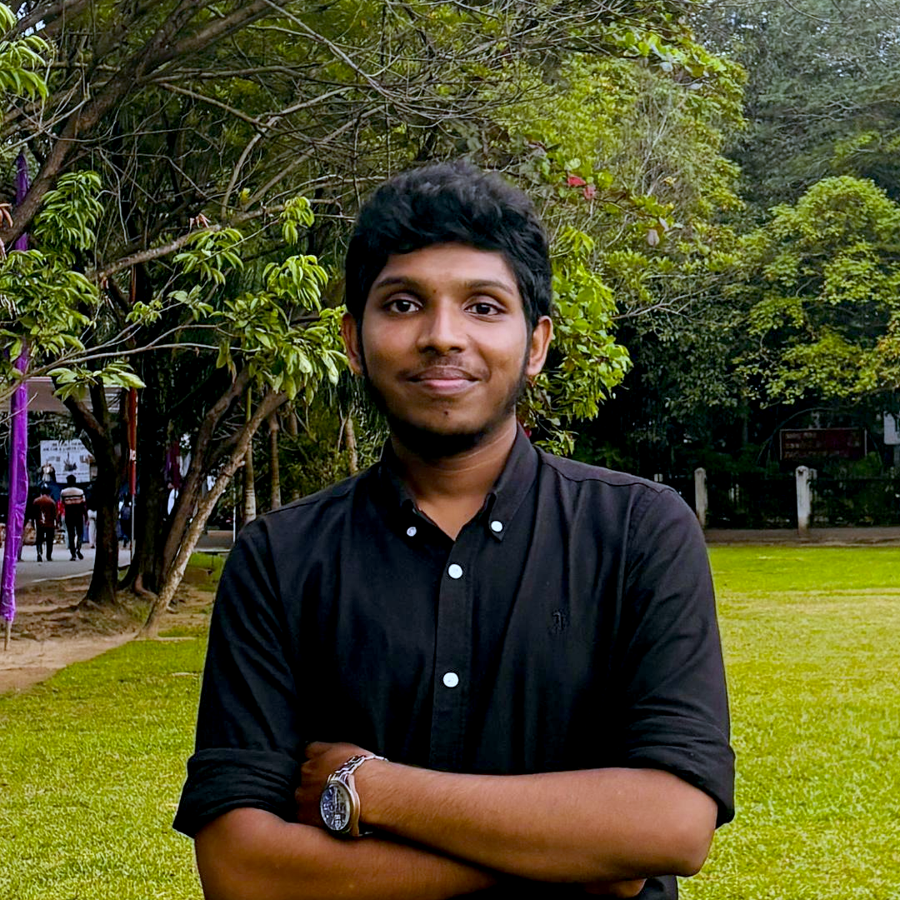
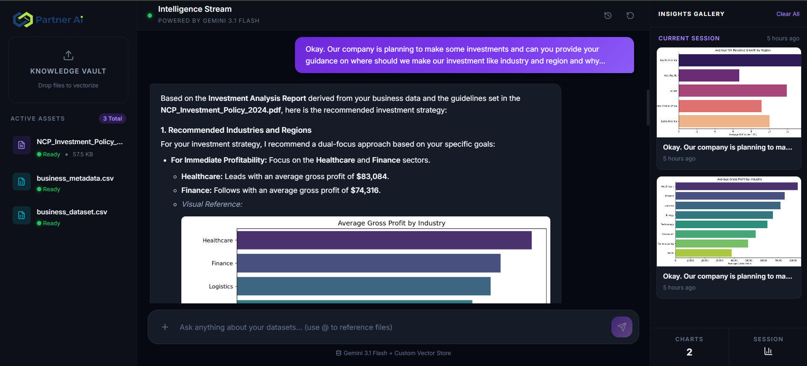
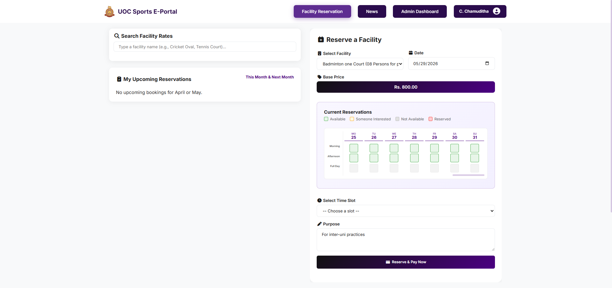
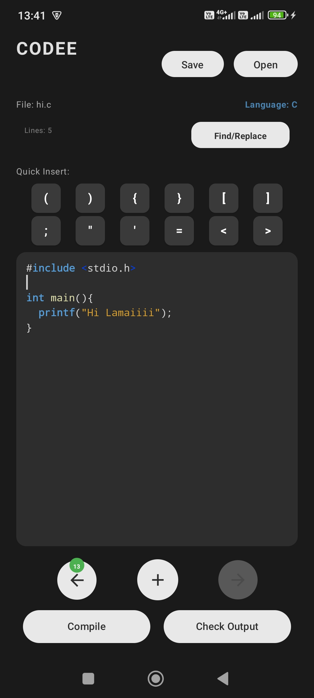
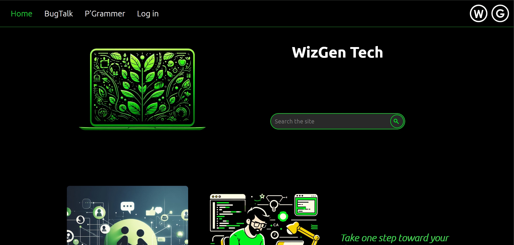

Software Engineer Intern
Acumatica — October 2026 to Present
Gaining professional experience in enterprise software development, collaborative engineering workflows, and working within a global software organization.

Software Engineer Intern | Information Systems Undergraduate
I build practical software solutions across full-stack development, automation, and applied AI. I enjoy turning complex problems into systems that make work simpler, smarter, and more efficient.
How I work
— watch the flow —
I'm a third-year BSc Information Systems undergraduate at the University of Colombo School of Computing (UCSC), currently working as a Software Engineer Intern at Acumatica.
My interests lie at the intersection of software engineering, applied artificial intelligence, and cybersecurity. I enjoy designing practical systems, exploring intelligent automation, and understanding how technology can solve real operational problems.
My experience includes full-stack web development, database systems, machine learning, AI agents, and collaborative software projects. Beyond development, I've been involved in technical competitions, community initiatives, and student leadership.
I believe good engineering starts with understanding the problem, not choosing the technology. Whether I'm building a solution, learning something unfamiliar, or working with a team, I value initiative, adaptability, and delivering something useful.
Acumatica — October 2026 to Present
Gaining professional experience in enterprise software development, collaborative engineering workflows, and working within a global software organization.
July 2026 | Team KruthimaOps
Developed a machine learning and GIS-based flood risk intelligence solution for Sri Lanka as part of a hackathon team.
May–July 2026 | ISACA UCSC Student Group
Contributed to planning and coordinating a cybersecurity competition, including technical challenge preparation and program activities.
February 2026 | Team CTPD
Reached the national Top 10 grand finale of a cybersecurity and software development competition.
Selected systems, experiments, and solutions I've worked on.
1st Runner-Up — MLOpsidian 2026 · KruthimaOps
A machine learning and GIS-based flood risk intelligence platform developed for Sri Lanka, combining environmental, geographical, and rainfall data to estimate district-level flood risk and visualize results.

An AI-powered document and data analysis application that combines retrieval-augmented generation, specialized agents, and interactive visualizations to help users explore information.

University Client Project
A full-stack sports management platform developed for the University of Colombo, bringing facility bookings, equipment operations, administration, and sports-related workflows into one system.

An Android code editor built with Kotlin, featuring text editing tools, syntax highlighting, and code execution through an ADB-connected Python backend.
An interactive desk companion prototype combining environmental sensors, Arduino-based control, and ESP32 connectivity to explore smart workspace interactions.

An independently built content website that introduced me to real-world web deployment, hosting, SEO, and website monetization.
From independent exploration to real-world engineering.
Started my professional software engineering journey at Acumatica, working within a global enterprise software environment.
Competed as part of Team KruthimaOps and developed Flood Timeline Sri Lanka, a machine learning and GIS-based flood risk intelligence platform.
The project combined data preparation, feature engineering, predictive modeling, API development, and geographical visualization.
The experience strengthened my interest in applied AI, especially where data-driven systems address meaningful real-world problems.
Organization: ISACA UCSC Student Group
Served as Program Lead for iCS 3.0, a cybersecurity Capture The Flag competition organized by the ISACA UCSC Student Group.
Contributed to program planning, challenge preparation, competition structure, and coordination of activities supporting the participants.
The competition program included cybersecurity workshops, technical challenges, and competitive rounds designed to develop practical problem-solving and security skills.
This experience allowed me to contribute to a cybersecurity initiative from an organizational and technical perspective, while strengthening my leadership, coordination, and collaborative problem-solving skills.
Deepened my understanding of retrieval-augmented generation, AI agents, modern foundation models, and intelligent application architectures.
Completed IBM's RAG and Agentic AI learning program and AWS Generative AI and AI Agents with Amazon Bedrock learning program.
Explored these concepts through practical application development, including PartnerAI.
Team: CTPD
Organizer: CSSL GenZ Chapter of UCSC
Competed in GenZipher 1.0, a national-level competition combining cybersecurity challenges, problem-solving, and software development.
As part of Team CTPD, qualified for the Top 10 grand finale following the online selection round.
The 24-hour final round was held at OREL IT on February 7–8, 2026, challenging finalist teams to work through technical problems and develop solutions under time constraints.
The experience provided an opportunity to apply security-related thinking, technical adaptability, teamwork, and practical development skills in a competitive environment.
Worked with a team on Colombo Sports E-Portal, a sports management platform developed for the University of Colombo's Physical Education Department.
The experience covered requirements analysis, backend and frontend development, administrative workflows, external service integrations, and collaborative delivery.
Began undergraduate studies at the University of Colombo School of Computing in 2024.
My academic journey has covered software engineering, data structures and algorithms, database systems, information security, business process management, cloud infrastructure, enterprise applications, data analytics, and systems design.
University projects and independent learning have helped me connect technical concepts with organizational requirements and practical development.
Began exploring software development, machine learning, cybersecurity, and networking through independent study.
Completed the Machine Learning Specialization by DeepLearning.AI and Stanford Online, taught by Andrew Ng, and explored other technical learning programs.
Built and deployed WizGen Tech, gaining practical exposure to web development, hosting, SEO, and managing a live website.
This period established the independent learning habits that continue to shape my technical development.
Technologies and approaches I've used across projects, coursework, and professional learning.
Have a software project, automation challenge, or interesting idea?
I'm open to selected freelance projects and technical collaborations, particularly in full-stack development, business automation, data systems, and applied AI.
Tell me what you're trying to solve. We can start with the problem and explore a practical solution.